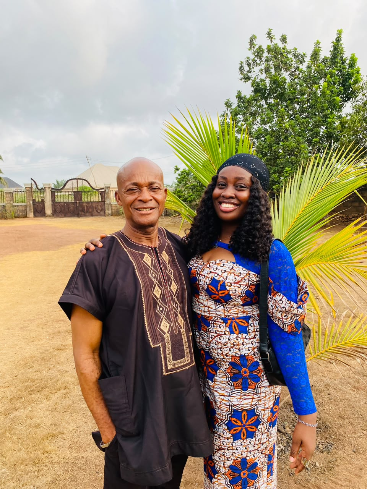

Biography
Okocha Nwagboniwe is a dedicated local government civil servant committed to serving my community with integrity, professionalism, and accountablity. He is so prefessional in his work and always happy doing it.
He is the quiet strength of our family and the steady hand that protects and guides us through every challenge.
“A good father is a blessing that stays with us long after we grow.”
Okocha Nwagboniwe is a dedicated local government civil servant committed to serving my community with integrity, professionalism, and accountablity. He is so prefessional in his work and always happy doing it.
Built a successful family, providing financial stability and ensuring the bfamily basic's needs are met and remained an example of integrity and consistency.
Reading books on leadership, governance, or personal project. Also watching documentaries and news.
We admire him as a loving, hardworking, wise father who inspires us with his patience and protects us with his strength.
